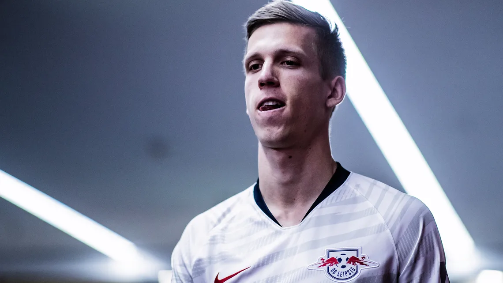

News

Messi wins World Cup with Argentina!
Lionel Messi's wait for World Cup glory is finally over after Argentina beat France in a dramatic penalty shootout on Sunday. More ...

Official: Cristiano Ronaldo completes move to Saudi Arabian side Al Nassr
Cristiano Ronaldo has completed a transfer to Al Nassr. More ...

Mislav Oršić to sign for Southampton
Dinamo Zagreb are set to sell their Croatian international Mislav Oršić and according to an exclusive report from daily Jutarnji list, the 30-year-old winger is off to the English Premier League More ...

Why Croatia's Josko Gvardiol is one of the best young defenders at the World Cup
Having arrived at the 2022 World Cup with a reputation as one of the most promising young centre-backs in the world, it's no bold claim to suggest that Croatia's Josko Gvardiol (who was No. 22 on ESPN's 39 U21 list in April) has been the outstanding defender of the tournament so far. More ...

RB Leipzig's Dani Olmo: "It's a dream to be in the Bundesliga
Former Barcelona youth player Dani Olmo has told bundesliga.com that he feels fully vindicated by his decision to join RB Leipzig from Dinamo Zagreb.More ...